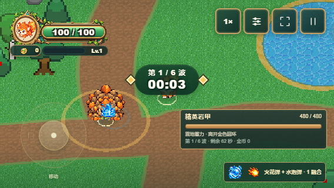
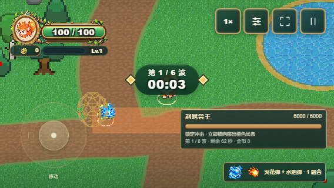
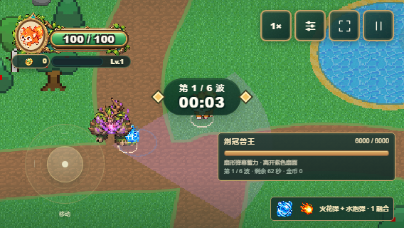

潮涌棱镜 · 遗物内容工厂 V1
以下图片均为实际游戏 DOM / WebGL 渲染截图。确定性场景固定随机种子、布置敌人并推进真实战斗，不拼接游戏画面。卡片由正式奖励池抽取；商店由真实第五波边界进入并购买。
水泡弹 + 范围扩张 → 合法奖励。实际半径 1.8 → 2.25，水系攻击间隔 ×1.10；原有伤害与碰撞流程。省电模式保留蓝色波纹。
精英与首领预警

精英范围预警与潮涌波纹重叠

Boss 冲刺预警与潮涌波纹重叠

Boss 扇形预警与潮涌波纹重叠
满池与预警像素验证 · 内容校验结果 · 测试与基线对照报告